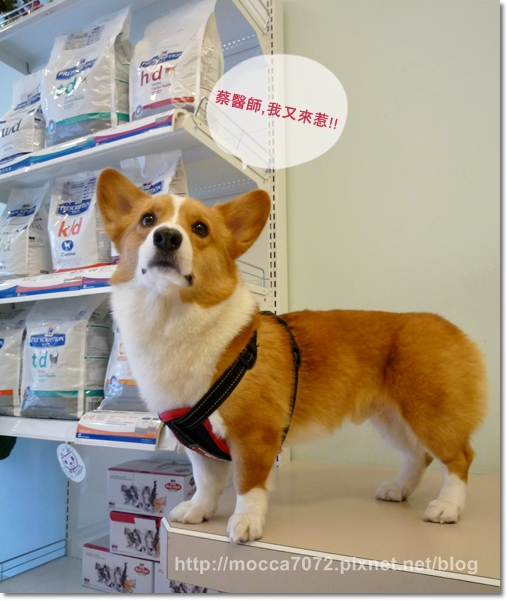
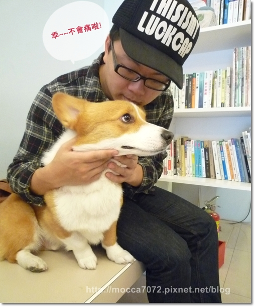
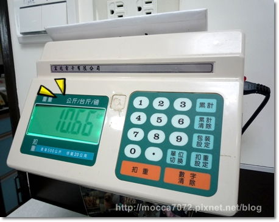
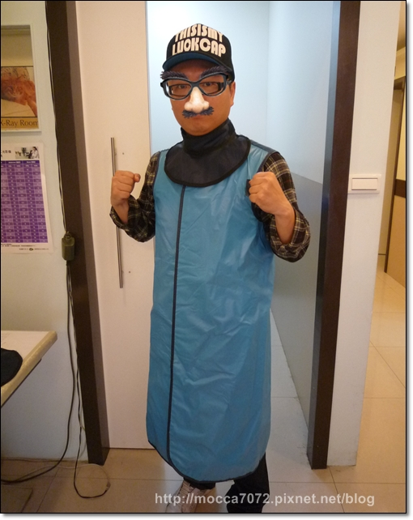
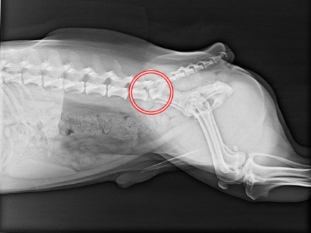
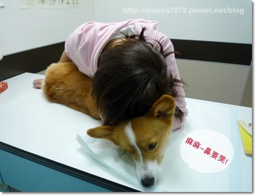
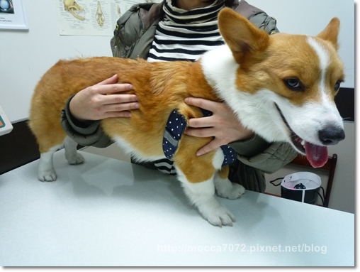

2011.03.19 我幫卡卡安排了健檢跟預防針施打
一樣是選擇去年的芸林動物醫院，交給蔡醫師我也比較放心
 小插曲：那天抱著卡卡要走進診療室時，
小插曲：那天抱著卡卡要走進診療室時，
蔡醫師一看到卡卡就說你是那隻夜市人生的摩卡卡厚！
他說有很多人轉寄那支影片給他看，哈哈哈哈～我快笑屎！
而且影片中的蔡醫師飾演!? 不理摩卡卡的壞叔叔~XDDDDD
請點－－＞摩卡卡之"夜市人生"

進去前拔拔在洗腦? 安撫卡卡

體重依舊保持的很好，完全沒有變胖！！
我們給卡卡正餐，零食都沒有少過！飯量絕對比鴿子多，零食一定給整塊，哈哈哈
身材還能夠一直保持這麼好，我個人是超羨慕他的

蔡醫師觸診完也抽了血，就準備打鎮定，待會要拍髖關節

卡卡這點很棒，打針抽血都乖乖的不亂動！只有臉很"塞"而已～XD

這次做了以下基本的項目&預防針
1.基礎血檢 950
2.犬四合一 800
3.髖關節檢驗 1850
4.預防針10合一+狂犬病 1000
這次基楚血檢、犬四合一 兩項都通過檢驗！
| 檢驗項目 100/3/19 | 結果 | 狗參考值 |
| 1.WBC 白血球總數 | 6.7 | 6.0-17.0 |
| 2.RBC 紅血球 | 5.51 | 5.5-8.5 |
| 3.Hemoglobin 血色素 | 12.9 | 12.0-18.1 |
| 4.PCV 紅血球細胞容積 | 40.3 | 37.0-55.0 |
| 5.MCV 平均血球容積 | 73.1 | 60.0-77.0 |
| 6.MCH 平均血球血色素 | 23.4 | 19.5-26 |
| 7.MCHC 平均紅血球血紅素濃度 | 32 | 32.0-36.0 |
| 8. Platelets 血小板PLT | 178 | 200-500 |
| 1.ALT 丙胺酸轉胺酶 | 93 | 5-60 |
| 2.ALKP 鹼磷酶 | 38 | 10-150 |
| 3.BUN 血中尿素氮 | 22 | 7--27 |
| 4.Creatinine 肌酸酐 CREA | 1 | 0.4-1.8 |
| 5.T P 蛋白質 (T-protein) | 5.7 | 5.1-7.8 |
| 6.Glucose 血糖 | 105 | 60-125 |
話說之前看到一隻得了焦蟲的黃金，看起來病懨懨的好可憐，！
夏天快到惹，又要開始防患蟲蟲危機！
另外其實每年安排健檢最主要的還是因為卡卡的奧咖，
每次髖關節檢查，我跟猛哥都很緊張又很擔心檢測出的結果，
這次拍髖關節主人要進去幫忙，所以猛哥穿上鉛衣

去年的結果不錯還令我放心，但今年雙腿的受力程度就有了落差
左腳出現了些微磨損，原本平滑圓圓的骨頭已經有一點點的不圓
這表示有可能是他的右腳比較不舒服，所以走路重心都放在左腳上
造成左腳骨頭磨損比較多，但下次檢驗可能換右腳磨損加重，
因為左腳也開始不舒服，所以重心又換到右腳
蔡醫師跟我說不用擔心，情況還很輕微沒有很嚴重，但說真的根本就沒辦法啊！
尤其是醫生看著Ｘ光片時，發出的聲音，口氣，每一次我全身神經都緊緊的被牽動著
而且這次檢查卡卡也有輕微的『馬尾束症候群』 
完全沒有心理準備下，聽到後我跟醫師說話聲音都不自覺發抖了，只差沒噴出淚！

說真的當下好挫，無預警之下聽到，害怕的感覺瞬間蜂擁而上
跟去年相比，今年有稍微鈣化，
原本應該是很明顯的一個縫，但中間出現白白的部分變多了

蔡醫生說目前程度還是輕微的，很多柯基都有這種情形，
所以先採用保守療法針炙跟溫炙，雖然開了藥但先不吃，先看溫炙的反應如何

買了一組溫灸棒+艾草條，
回家就可以自己幫卡卡做，很簡單但我施力方法可能不太對，手好酸！

回到家心情很低落，看到卡卡就是盯著他的腳，完完全全限制他跳的動作
才發現原來我一點都不堅強，喉嚨好像卡住東西一樣而且偶爾會上演三秒落淚，
想不到今年夜市人生主角換老娘了......>"<
卡卡這小子長這嘛大第一次讓我擔心，發自內心的害怕讓眼淚不自覺的溢出來
雖然是天生不良造成的，但一想到無法根治它就覺得頗無力

那幾天發出的訊息都讓大家替我們擔心，謝謝大家，超感動的！
經過這一週爬文找資料，詢問醫師，了解比較多一點後我真的冷靜多了......
其實真的是當下聽完嚇到惹....(糗) 
卡嚕比～我一定要讓你的壞的程度就停留在這階段！

＝＝＝＝＝＝＝＝＝＝2011.03.27複診＝＝＝＝＝＝＝＝＝＝＝＝＝＝＝＝＝＝＝
2011.03.27 一週後回芸林複診，蔡醫師說卡卡對溫炙的反應很好，
不過我力道不太夠，所以只有表面的氣很足，內部氣稍嫌不足，又再重新教了我們一次
當天也再做一次針炙，回去就溫炙跟口服藥都一起進行，預約了兩週後再回診
乖乖給醫師針灸的卡卡

可能是感受到我的緊張跟害怕吧！(笑)
今天蔡醫師一直跟我說不用太擔心，目前狀況很輕微，照顧好是可以控制住的！
真的很謝謝他，的確讓我們安心不少，所以選擇信任的醫生真的好重要！
接下來打算縮短時間，定期回去檢查狀況，我一定一定要控制住這壞東西！
我說這健康檢查真的很考驗主人的心臟  等宣判的時候真的有夠可怕的！
等宣判的時候真的有夠可怕的！
但該面對的還是要面對，早期發現早期治療，
比起發現時來不及我寧可每年心臟被電一下！
芸
林動物醫院暨醫學檢驗中心 (採預約制)
電話: 02-2872-1398
地址:
台北市北投區石牌路二段332之1號
全站熱搜

 留言列表
留言列表


 M.K 瘋旅遊 (3)
M.K 瘋旅遊 (3)